如果没有安装vmware的话可以看我的另一篇文章：vmware安装教程
windows10下载链接(需要用迅雷下载)：ed2k://|file|zh-cn_windows_10_consumer_editions_version_22h2_updated_dec_2023_x64_dvd_3045f975.iso|6235348992|A12E47ED16415F13D4965AC629897278|/
下载好的windows10映像，映像内含专业版，也是准备安装的版本

打开vmware后，点击"文件"的新建虚拟机
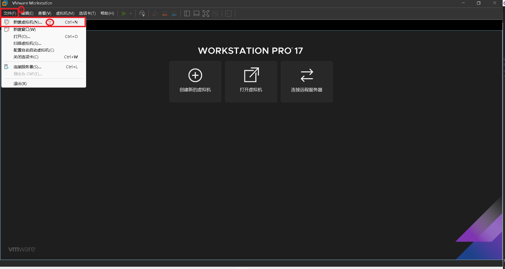
以"自定义(高级)(C)"类型配置安装windows10，然后"下一步"

"虚拟机硬件兼容性"不需要更改，默认即可，然后"下一步"

选择"稍后安装操作系统(S)"，然后"下一步"

"客户机操作系统"选择"Microsoft Windows(W)"
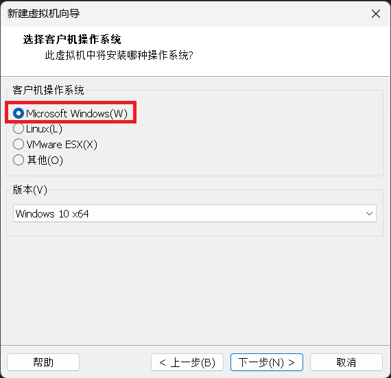
"客户机操作系统"的"版本(V)"选择"Windows 10 x64"，然后"下一步"

虚拟机的位置更改一下，可以更改到D盘，这个路径要提要创建好，得是真实的路径，然后"下一步"
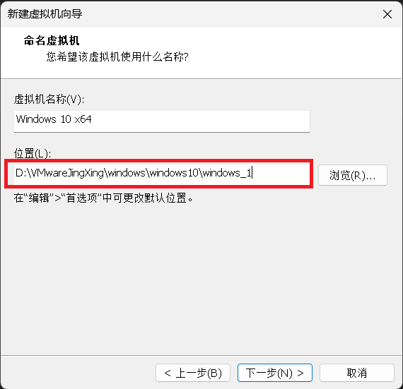
"固件类型"选择"BIOS(O)"，然后"下一步"

"处理器配置"可以根据电脑性能进行配置，比如"处理器数量(P)"选择为1，"每个处理器的内核数量(C)"对应的个数尽可能大，软件不报警告即可，然后"下一步"
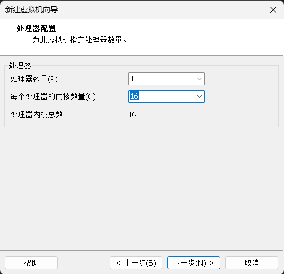
内存可以点击设置为"4 GB"，然后下一步

"网络类型"默认为"使用网络地址转换(NAT)(E)"即可，然后下一步

"I/O控制器类型"默认推荐的即可，不需要更改，然后"下一步"
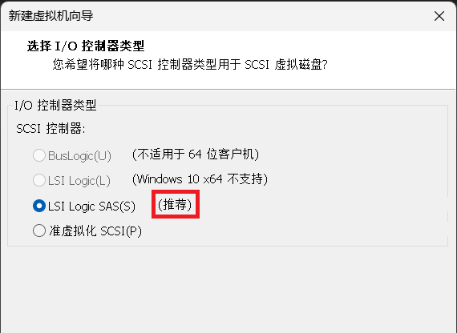
"磁盘类型"也按照默认推荐的即可
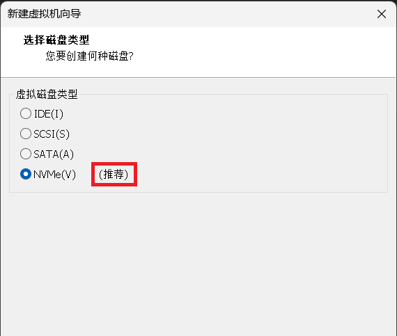
选择"创建新的虚拟磁盘(V)"，然后"下一步"

设置磁盘容量，至少30GB，这里我按照推荐的来，如果准备长期使用现在正在安装的虚拟机的话，可以将磁盘容量设置的再大一些，如100GB、150GB、200GB都可以，只要电脑本身有足够大的空闲空间就行，然后选择"将虚拟磁盘存储为单个文件"，接着"下一步"

"磁盘文件"名称不需要更改，但是需要将"磁盘文件"保存的路径更改一下，"磁盘文件"保存"windows10虚拟机安装位置"，与前边设置的"虚拟机位置"为同一路径，然后"下一步"
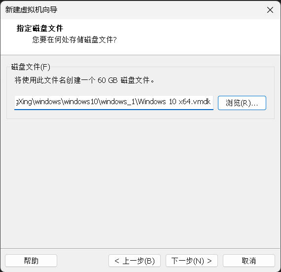
点击"自定义硬件(C)…"
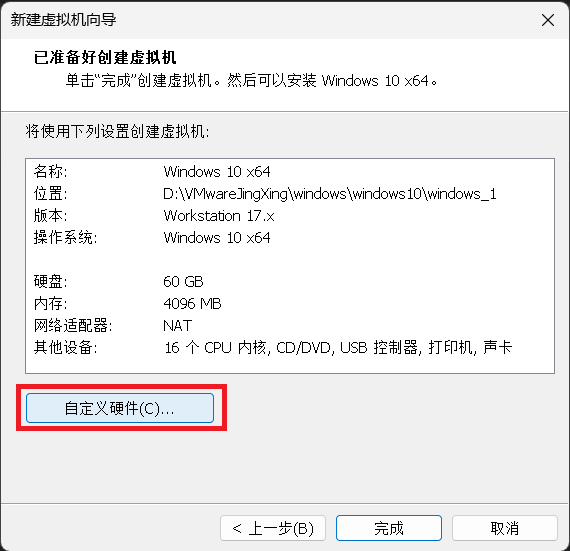
然后点击"新CD/DVD (SATA)"，选择"使用ISO映像文件"，接着点击"浏览"，找到刚刚下载好的windows10映像文件，我将下载好的windows10映像文件移动到了虚拟机位置的上一级目录，此我为准备好的windows10映像的实际路径，路径建议不要包含中文字符，然后点击"关闭"，关闭当前页面

设置完成后点击"完成"

快照部分可跳过，鼠标右键虚拟机的标签页，给制作好的虚拟机做一个快照，这样如果安装过程中出现问题了可以恢复快照重新安装
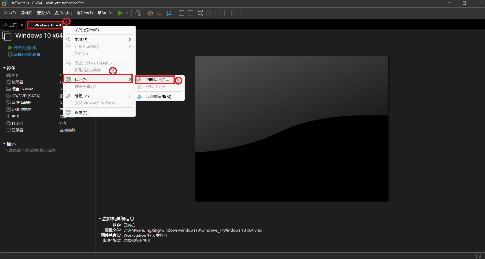
快照部分可跳过，添加描述信息后点击"拍摄快照"，添加描述信息是为了方便恢复快照的时候进行选择，恢复快照的时候可以选择恢复到哪个版本的快照
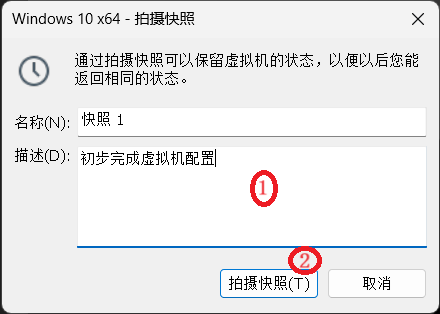
快照部分可跳过，鼠标右键虚拟机标签页，打开快照管理器
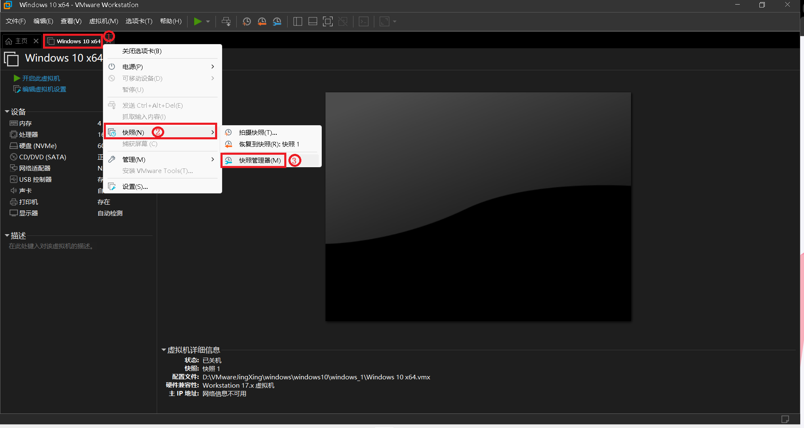
快照部分可跳过，选择要恢复的快照，然后点击"转到"即可恢复到对应的快照
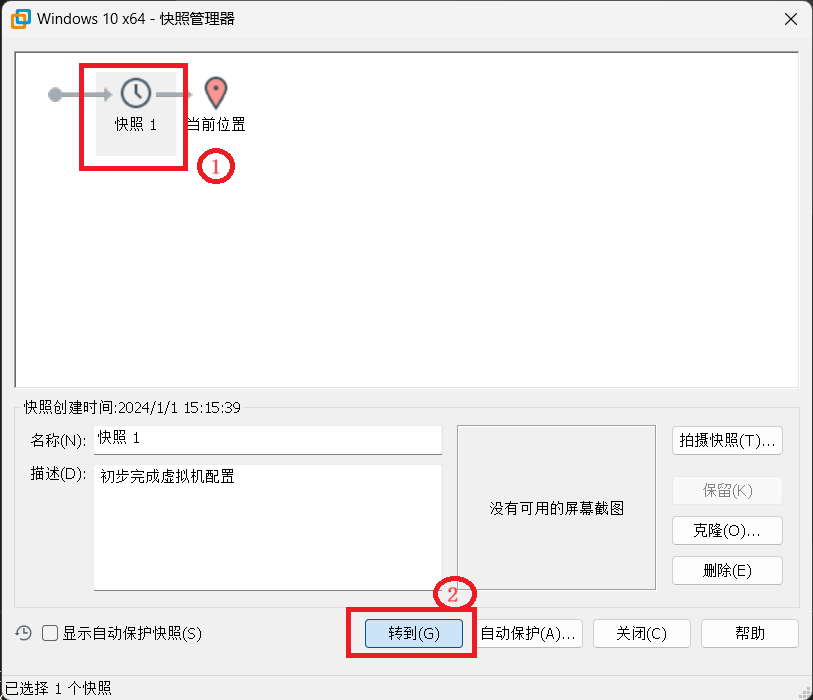
虚拟机配置好后就可以可以进行安装了，直接点击"开启此虚拟机"即可

点击"开启此虚拟机"后经过加载进入到了windows10的安装界面，安装界面要求选择"要安装的语言(E)"、"时间和货币格式(T)"、"键盘和输入方法(K)"，这些都不用更改，默认即可，如果有不一样的使用习惯可以根据自己的使用习惯进行配置，然后点击"下一页"
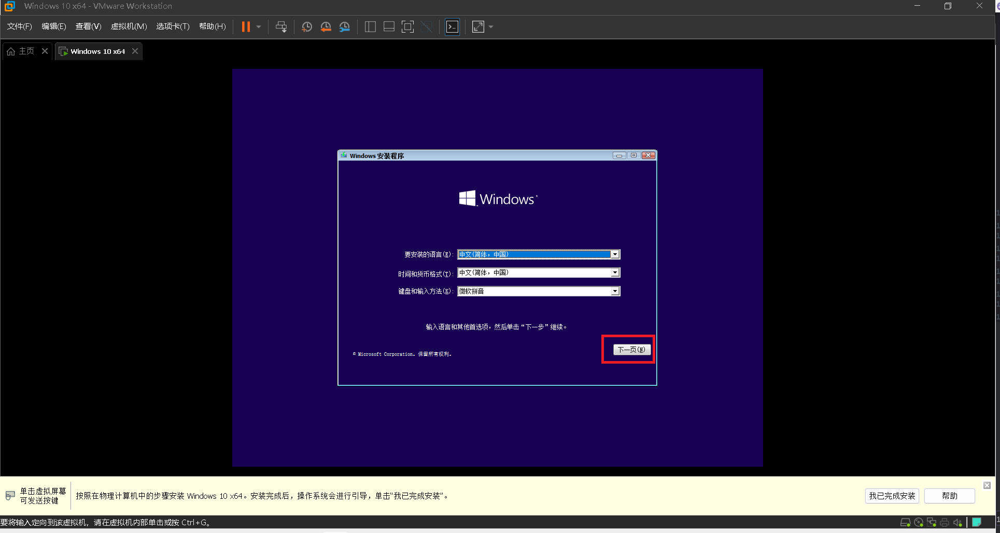
然后点击"现在安装"
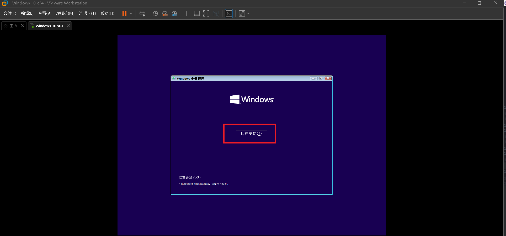
选择"我没有产品密钥(I)"，这样可以跳过输入产品密钥，等安装完windows10系统后再激活

选择要安装的windows10系统版本，建议选择"windows 10 专业版"，因为家庭版会有一些功能限制，这是家庭版系统本身决定的，与虚拟机无关，而专业版会更方便配置，不像家庭版会有功能限制，选择了"windows 10 专业版"后点击"下一页(N)"
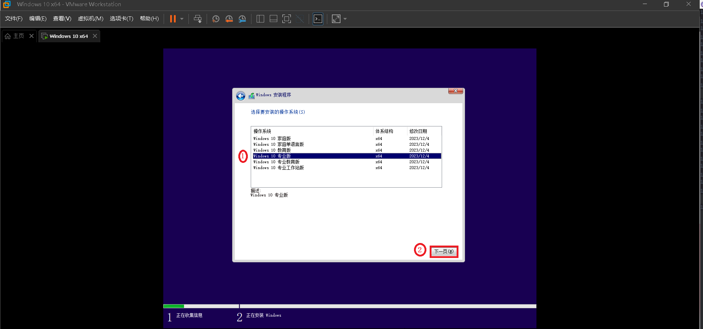
同意条款后点击"下一页"

选择"自定义"安装方式
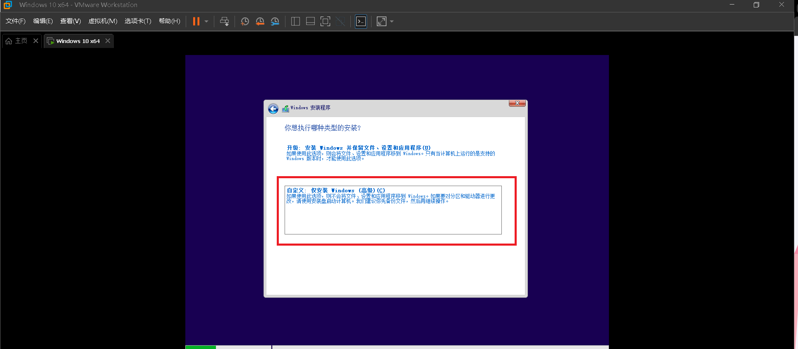
默认已经选中磁盘了，什么都不需要做，直接点击"下一页"

然后系统就开始安装了，安装过程中会自动重启虚拟机，耐心等待即可
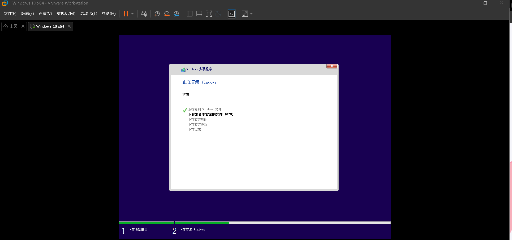
系统重启直到加载到这个页面，默认区域设置选中为"中国"，不需要更改，点击"是"
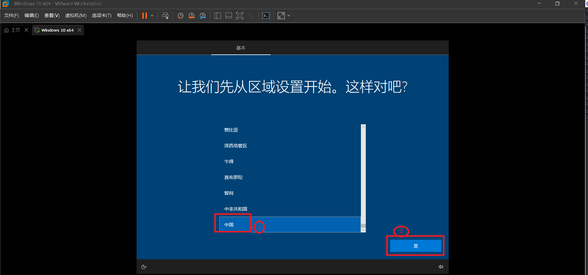
键盘布局默认选中"微软拼音"，也不需要更改，如果喜欢使用五笔拼音的可以自行选择，然后点击"是"

询问是否添加"第二种键盘布局"，直接点击"跳过"即可

加载一段时间后到这个页面，选择"针对个人使用进行设置"

选择"脱机账户"

选择"有限的体验"

设置一个不包含中文字符的用户名，如果设置中文用户名的话，以后使用国外某些软件可能会报异常，国外某些软件会在用户目录下创建数据文件夹，如果国外软件不支持包含中文字符的用户目录就会报错，因此用户名建议不要包含中文字符，设置完用户名后点击"下一页"
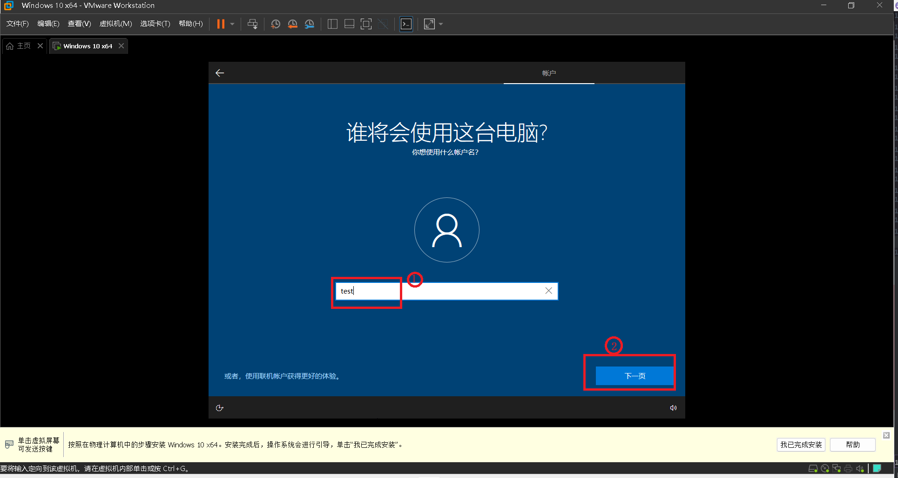
随便设置一个简单的密码，然后点击"下一页"

确认密码后点击"下一页"

接下来设置三个安全问题，自行设置

申请访问数据选择"以后再说"
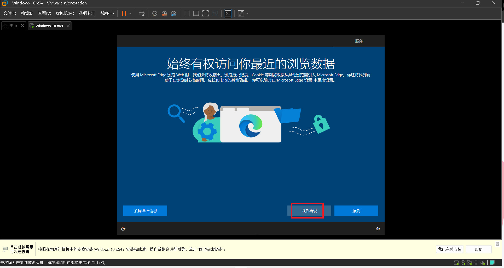
取消这些隐私设置后点击"接受"
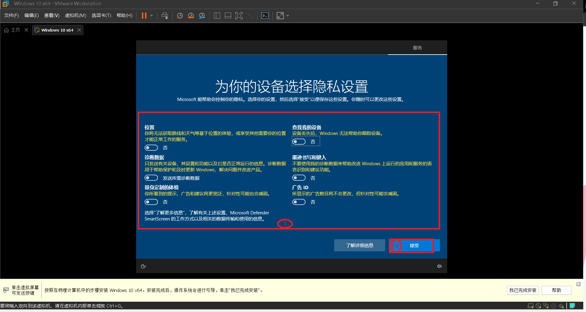
跳过"自定义的体验"
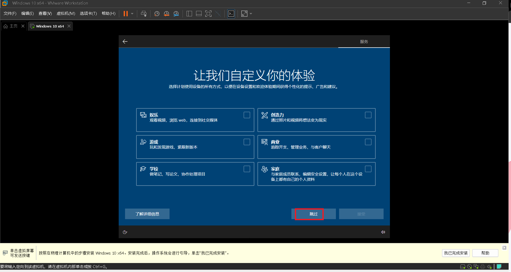
点击"以后再说"

这里必须点击"下一步"，否则无法完成虚拟机的安装，事实上当你开始使用windows系统开始，你就默认"同意个人数据跨境传输"了，因此不必在意这个，直接点击"下一步"
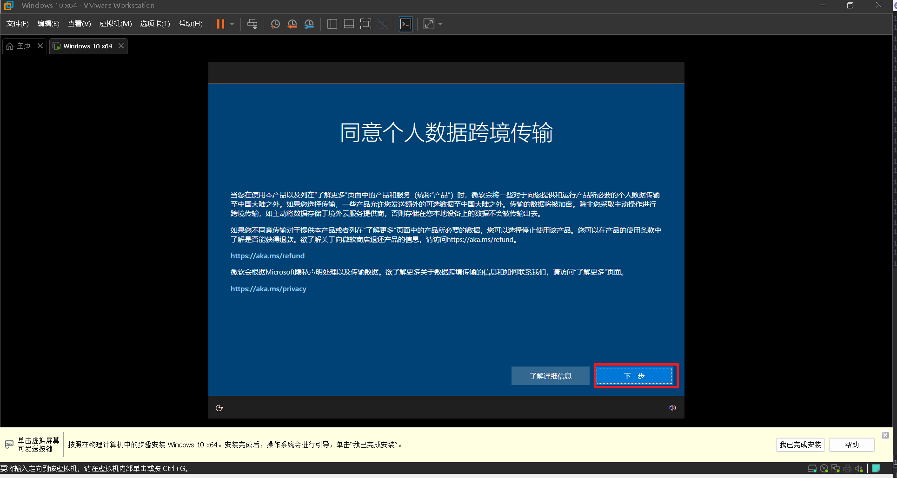
至此，windows10虚拟机安装完成
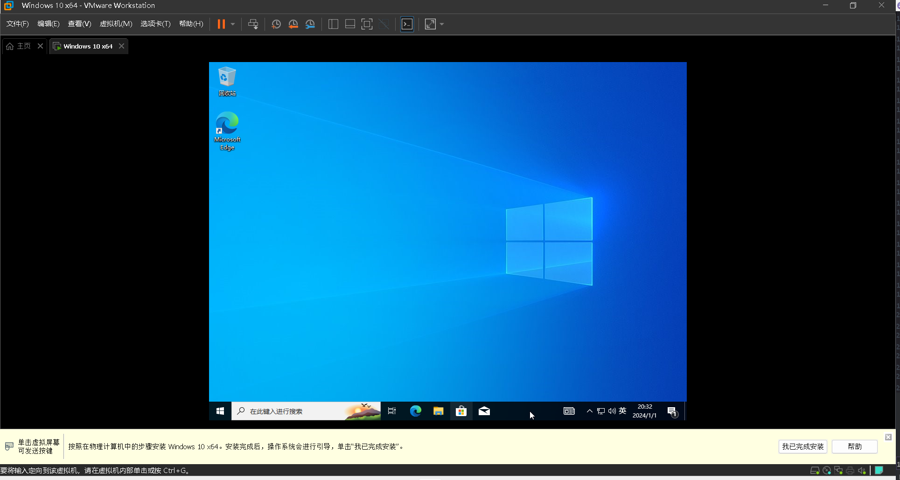
接下来要想有更改的虚拟机体验，还需要安装vmware-tools，右键虚拟机标签页，点击"安装VMware Tools(T)…"

这个时候打开虚拟机的"文件资源管理器"的"此电脑"就会发现多出来了一个"DVD驱动器(D:)VMware Tools"，鼠标左键双击运行该驱动器
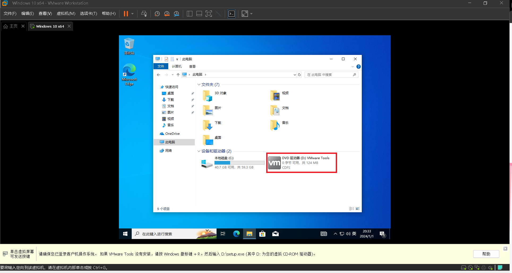
点击"是"继续运行
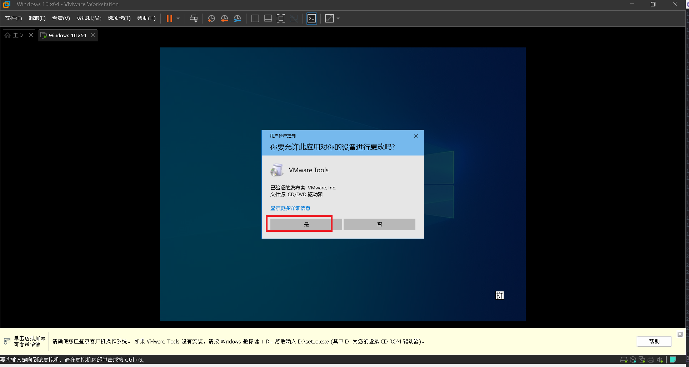
默认"下一步(N)"

选择"典型安装"，然后"下一步"
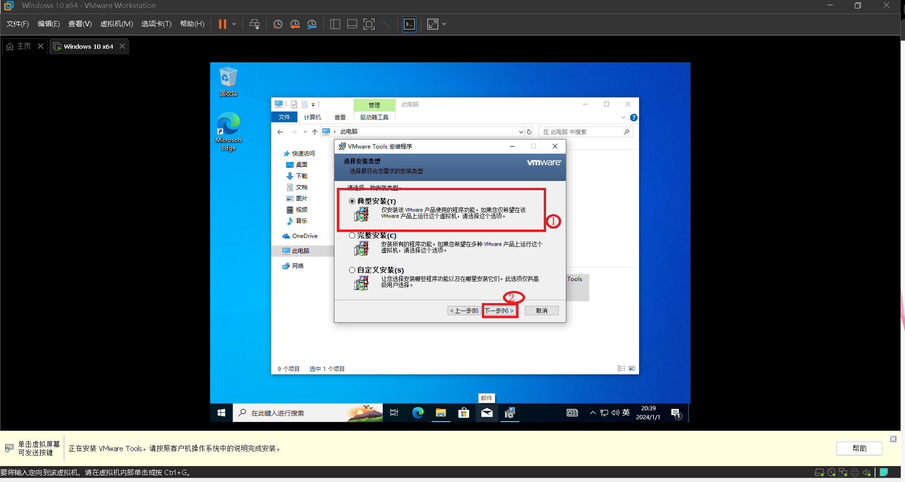
最后点击"安装"进行安装

最后点击"完成"，完成安装

提示重启系统，按照提示点击"是"重启即可

重启系统后，正常登录系统使用即可